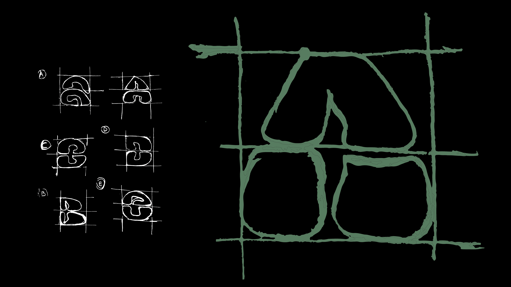

Umore
Type Design
Il progetto propone una font in grado di restituire le nervature delle piante e le forme umorali che queste creano, sia a livello microscopico nella definizione dei singoli glifi, che a livello macroscopico nel loro accostamento. Risultato di milioni di anni di evoluzione, queste composizioni variano anche all’interno di una singola specie, tanto da poter dire che ogni pianta ha un umore diverso dall’altra.
umore /u·mó·re/
1. Linfa delle piante
o liquido biologico
2. Disposizione o stato d’animo
particolare,
ma transitorio
Anche le piante - come alcune persone - possono definirsi umorali e lunatiche.
FASE 1
Definizione delle unità
Le infinite forme organiche che è possibile trovare sulle foglie sono state sintetizzate in un numero ristretto di sagome che presentano le curve più comuni e ricorrenti.

FASE 2
Definizione delle forme
Tutti i glifi sono inscritti in un quadrato, suddiviso orizzontalmente in due parti, in modo da mantenere un vuoto - ossia la nervatura - centrale costante per tutti.
